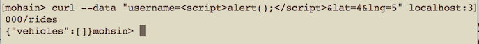
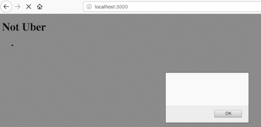
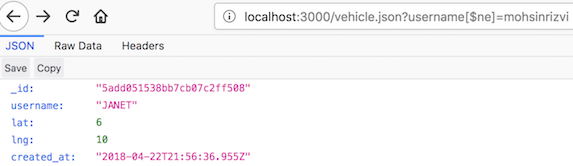
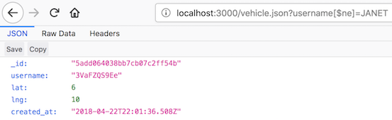
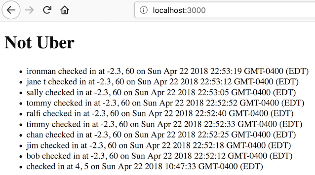

Security Assessment
Mohsin Rizvi
I. Introduction
The product is the backend server of a ride-sharing service. I was
hired to analyze the server for vulnerabilities and write a report
on my findings.
II. Methodology
I started with an analysis of the source code, and I noted down any
potential vulnerabilities.
-
I noticed that entries to the POST /rides route are not
sanitized and are later given to the user via the GET / route
and GET /vehicle.json routes, telling me of a potential
cross-site scripting vulnerability.
-
I noticed that the query strings given to the GET /vehicle.json
route are not sanitized before being used as input in the
MongoDB database. This tells me of a potential MongoDB/NoSQL
injection vulnerability.
-
I noticed that the main page, accessed through GET /, lists
all passengers and the place they last made a request from.
This stuck out to me as a privacy issue, as it allows anyone
to access customer data.
Where appropriate, I used curl to test POST exploits and Firefox for
GET exploits.
Tools used included:
-
Firefox for testing GET / and GET /vehicle.json.
-
curl for sending POST requests to POST /rides.
III. Abstract of Findings
Overall, the vulnerabilities found were mostly technical injection
vulnerabilities, with one privacy issue found. The first injection
vulnerability is an issue that allows attackers to send malicious
code to be unwillingly executed by other users. The second injection
vulnerability is an issue where search inputs are not properly
verified to be safe, and so searches for information can return
unintended data. The privacy issue is the fact that all passengers
have their information listed on the home page. This leaks
sensitive information about all passengers who use the web application.
IV. Issues Found
-
Issue: Cross-site Scripting
Location: JavaScript can be injected through the username
field when executing POST /rides. This information is
collected in server.js line 18 and is inserted into the
database on line 36. It is reflected back through GET / at
line 99.
Severity: High. A cross-site scripting vulnerability could
allow an attacker to do many malicious things, such as
stealing cookies and executing cryptocurrency-mining
JavaScript.
Description: I found this issue upon inspecting the source code
and seeing that unsanitized POST arguments are inserted into
the database. JavaScript can be injected into the website
through the POST /rides route as a username value. It can
later be executed when accessing the GET / route, which will
run the JavaScript on the browser of the user. See CWE-79 in
section VI and pictures below.
Proof of vulnerability: See pictures below.
 
Resolution: Sanitize inputs to prevent JavaScript injection. A
simple (yet somewhat draconic) example line of code to do this:
if (username.includes('<script>')) {username = '';}
-
Issue: MongoDB/NoSQL Injection
Location: MongoDB operators can be injected in query strings
when executing GET /vehicle.json. The query string is collected
in file server.js line 69, and it is used unsanitized in a
query on line 75.
Severity: High. Due to the server software, only one entry is
returned at a time, but this could still be used in repetition
with different query values each time to potentially access
many different documents in the database. For example: the
query string "username[$ne]=mohsinrizvi" returns a single
document for a user called JANET. But the string
"username[$ne]=JANET" can then be used to get another document,
and so on. A proof-of-concept is shown in the images below.
Description: I found this issue by inspecting the source code
and seeing that the query strings are used unsanitized
as database queries. Unsanitized query strings are used as input to
a MongoDB query, which can include operators to access
unintended data, leading to information leakage. See
CWE-943 in section VI and images below.
Proof of vulnerability: See pictures below.
 
Resolution: Sanitize database inputs to prevent MongoDB
operator injection. A simple way to do this is as follows:
if (query.includes('$')) {response.send({});}
-
Issue: Passenger Information Exposure
Location: The GET / route sends the username of all passengers
as well as the last place they requested a vehicle from, sorted
by time. The data is formatted as HTML in file server.js on line
99 and is sent on line 103.
Severity: High. The exposure could be exploited to track and
locate users of the app, since it is sorted by time (so an
attacker could identify someone's location exactly after they
place a request). Additionally, people's ride activity in the
long term can be tracked.
Description: The issue was easy to find: it is the entire
purpose of the GET / route. Accessing the route gives a list of
all the passengers, including their usernames and locations
from which they called a vehicle. See CWE-359 in section VI
as well as the image below.
Proof of vulnerability: See picture below.

Resolution: Do not send this data through the GET / route,
and instead use a route similar to GET /vehicle.json that
accepts a username through a query string and returns the data
associated with it. The queries should be sanitized to remove
MongoDB operators.
V. Conclusion
In conclusion, the issues found largely dealt with unsanitized input
and poor web application design that led to information exposure. The
following recommendations are made for future development on the web
application:
-
When accepting inputs from the user, sanitize them as
appropriate, either by checking for database operators or by
not accepting scripts embedded in inputs. This is a low cost
feature to implement and is a few lines of code at most.
-
Do not have information about users publicly available. This
should only be accessible if proper validation is used. The
information of a user should be accessible if and only if
the privacy credentials of that user are provided. This
requires a partial system redesign. This is a medium cost
feature to implement, requiring several hours of time.
VI. References